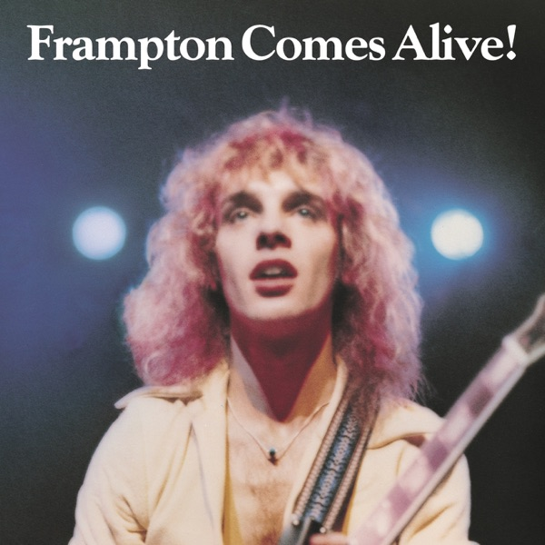

Frampton Comes Alive!
Peter Frampton
Upgrade idea: The 2008 remastered reissue (750 216 505-1) offers cleaner surfaces. For the definitive version, the original A&M SP-3703 retail pressing with early TML (Turtletone) stampers is preferred over this Club Edition.
- Original release
- 1976
- Pressing year
- 1976
- Country
- US
- Format
- 2× Vinyl LP, Album, Club Edition, Reissue
- Label / Cat#
- A&M Records – R223558 / A&M Records – R-223558 / A&M Records – SP-3703
- Genres
- Rock
- Styles
- Rock & Roll, Pop Rock
- Discogs release
- 5686735
- Discogs master
- 101332
- Apple Music
- Frampton Comes Alive!
- Wikipedia
- Frampton Comes Alive!
Production notes
Tracklist (Discogs)
| A1 | Something's Happening | 5:54 |
| A2 | Doobie Wah | 5:28 |
| A3 | Show Me The Way | 4:42 |
| A4 | It's A Plain Shame | 4:21 |
| B1 | All I Want To Be (Is By Your Side) | 3:27 |
| B2 | Wind Of Change | 2:47 |
| B3 | Baby, I Love Your Way | 4:43 |
| B4 | I Wanna Go To The Sun | 7:02 |
| C1 | Penny For Your Thoughts | 1:23 |
| C2 | (I'll Give You) Money | 5:39 |
| C3 | Shine On | 3:35 |
| C4 | Jumping Jack Flash | 7:45 |
| D1 | Lines On My Face | 7:06 |
| D2 | Do You Feel Like We Do | 14:15 |
Tracklist (Apple Music)
| 1 | Something's Happening (Live) | 5:52 |
| 2 | Doobie Wah (Live) | 5:24 |
| 3 | Show Me The Way (Live) | 4:46 |
| 4 | It's A Plain Shame (Live) | 4:23 |
| 5 | All I Want To Be (Is By Your Side) [Live] | 3:28 |
| 6 | Wind Of Change (Live) | 2:44 |
| 7 | Baby, I Love Your Way (Live) | 4:35 |
| 8 | I Wanna Go To The Sun (Live) | 7:16 |
| 9 | Penny For Your Thoughts (Live) | 1:22 |
| 10 | (I'll Give You) Money (Live) | 5:45 |
| 11 | Shine On (Live) | 3:26 |
| 12 | Jumping Jack Flash (Live) | 7:52 |
| 13 | Lines On My Face (Live) | 7:05 |
| 14 | Do You Feel Like We Do (Live) | 14:16 |
Personnel & credits
- Roland Young (3) — Art Direction
- Stanley Sheldon — Bass Guitar, Vocals
- Stan Evenson — Design
- John Siomos — Drums
- Corky Stasiak — Engineer [Assistant]
- Dave Wittman — Engineer [Assistant]
- Frankie D'Augusta — Engineer [Assistant]
- Jay Messina — Engineer [Assistant]
- Neal Teeman — Engineer [Assistant]
- Eddie Kramer — Engineer [Live Recording]
- Ray Thompson — Engineer [Live Recording]
- Chris Kimsey — Engineer [Live Recording], Remix
- Bob Mayo — Guitar, Vocals, Electric Piano [Fender Rhodes Piano], Organ, Grand Piano
- Cameron Crowe — Liner Notes
- Mike Reese — Mastered By
- Richard E. Aaron — Photography By [Except John Siomos]
- Michael Zagaris — Photography By [John Siomos]
- Peter Frampton — Producer, Arranged By, Guitar, Vocals, Talkbox, Remix
Identifiers
- Matrix / Runout: SP-3709 (Side A Label)
- Matrix / Runout: R-223558 A-1 (Side A Label)
- Matrix / Runout: SP-3710 (Side B Label)
- Matrix / Runout: R-223558 B-1 (Side B Label)
- Matrix / Runout: SP-3711 (Side C Label)
- Matrix / Runout: R-223558 C-1 (Side C Label)
- Matrix / Runout: SP-3712 (Side D Label)
- Matrix / Runout: R-223558 D-1 (Side D Label)
- Matrix / Runout: R223558A 1 I (Runout Side A, Variant 1)
- Matrix / Runout: R-223558B-2 I (Runout Side B, Variant 1)
- Matrix / Runout: R223558c 1 I (Runout Side C, Variant 1)
- Matrix / Runout: R223558d 2 I (Runout Side D, Variant 1)
- Matrix / Runout: R 223558A 1 I A1F (Runout Side A, Variant 2)
- Matrix / Runout: R 223558B 1 I A1M (Runout Side B, Variant 2)
- Matrix / Runout: R 223558C 1 I A1N (Runout Side C, Variant 2)
- Matrix / Runout: R 223558d 2 I A1H (Runout Side D, Variant 2)
Notes
Recorded at Winterland, San Francisco; Marin Civic Center, San Rafael, California; Island Music Center, Commack, Long Island, New York; State University nof New York, Plattsburgh, Wally Heider's Mobile Recording Truck, California and the Fedco Recording Truck, New York.
Comes in a gatefold sleeve.
R223558 back cover, R-223558 on labels, SP-3703 on both cover and labels.
Auto-coupled release.
Runouts are stamped.
Frampton Comes Alive! is Peter Frampton’s landmark 1976 double live album, recorded at various concerts in 1975 and released on A&M Records in January 1976. It became one of the best-selling live albums in history — selling over 8 million copies in the US alone in its first year — and launched Frampton from a respected but modestly successful solo artist into a global superstar almost overnight. The album captures Frampton at his live peak: an instinctive, charismatic performer with a gift for guitar melody and crowd connection, deploying the talk box effect on “Do You Feel Like We Do” and “Show Me the Way” to iconic effect.
The album’s success is inseparable from its timing — 1976 was peak arena rock, and Frampton’s blend of melodic hard rock, accessible songwriting, and showmanship translated perfectly to the format. The double LP format allowed the live experience to breathe, with extended versions of songs that expanded well beyond their studio counterparts.
This pressing is a 1976 US Club Edition (Columbia House / A&M, catalog R223558 / SP-3703), distributed through the Columbia Record Club — a mail-order subscription service that pressed its own variants of popular albums for its members. Club editions were pressed simultaneously with the commercial release and are genuine period pressings, though sometimes on slightly thinner vinyl than the standard retail issue. The
WWstamper marking identifies the cutting engineer or pressing plant lacquer cutter for this specific variant.About this 1976 US pressing (2× Vinyl, LP, Club Edition): A&M Records / Columbia House catalog R223558 / SP-3703, 1976 Club Edition pressing. Double LP. Matrix R-223558 A/B/C/D with WW stamper.